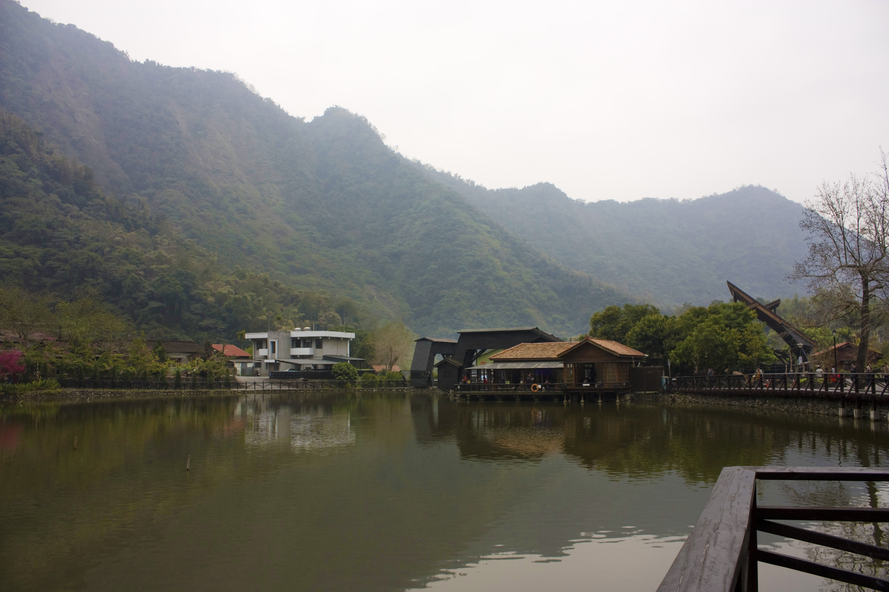
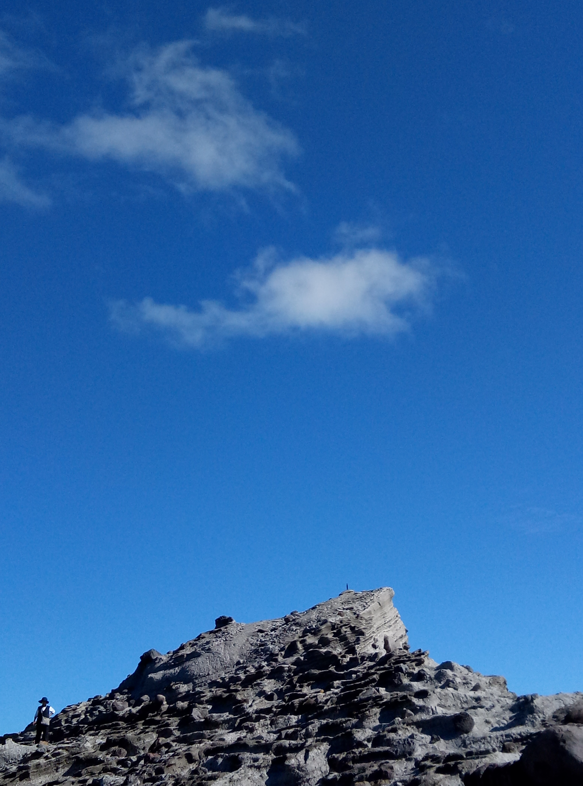
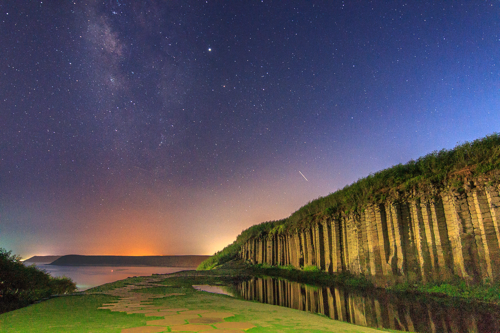

每張風景，都有出處。
以下為歷年實景照片，非即時影像。授權查核日期：2026-11-16。

野柳・女王頭
照片：Romain Pontida ／ Wikimedia Commons 原作 ／ CC BY-SA 2.0 · 拍攝：2013-10-26
.jpg){kind=link}
使用來源照片或其縮小版本，不調色或變更畫面內容；首頁與卡片以 CSS 裁切顯示，文章頁可看完整構圖。照片及其裁切呈現沿用所列授權，不代表作者為本網站背書。
查看完整照片 ↗
車埕・山與貯木池
照片：欣盈 ／ Wikimedia Commons 原作 ／ CC BY-SA 2.0 · 拍攝：2011-02-12

使用來源照片或其縮小版本，不調色或變更畫面內容；首頁與卡片以 CSS 裁切顯示，文章頁可看完整構圖。照片及其裁切呈現沿用所列授權，不代表作者為本網站背書。
查看完整照片 ↗

井仔腳・瓦盤鹽田
照片：Pbdragonwang ／ Wikimedia Commons 原作 ／ CC BY-SA 3.0 · 拍攝：2011-02-07

使用來源照片或其縮小版本，不調色或變更畫面內容；首頁與卡片以 CSS 裁切顯示，文章頁可看完整構圖。照片及其裁切呈現沿用所列授權，不代表作者為本網站背書。
查看完整照片 ↗
石梯坪・海蝕階地
照片：lefteris ／ Wikimedia Commons 原作 ／ CC BY-SA 4.0 · 拍攝：2018-11-03

使用來源照片或其縮小版本，不調色或變更畫面內容；首頁與卡片以 CSS 裁切顯示，文章頁可看完整構圖。照片及其裁切呈現沿用所列授權，不代表作者為本網站背書。
查看完整照片 ↗

大菓葉・柱狀玄武岩
照片：Mark Kao ／ Wikimedia Commons 原作 ／ CC0 1.0 · 拍攝：2019-08-28

使用來源照片或其縮小版本，不調色或變更畫面內容；首頁與卡片以 CSS 裁切顯示，文章頁可看完整構圖。照片及其裁切呈現沿用所列授權，不代表作者為本網站背書。
查看完整照片 ↗

芹壁・閩東石屋
照片：張雅倫 ／ Wikimedia Commons 原作 ／ CC BY-SA 4.0 · 拍攝：2018-12-02

使用來源照片或其縮小版本，不調色或變更畫面內容；首頁與卡片以 CSS 裁切顯示，文章頁可看完整構圖。照片及其裁切呈現沿用所列授權，不代表作者為本網站背書。
查看完整照片 ↗